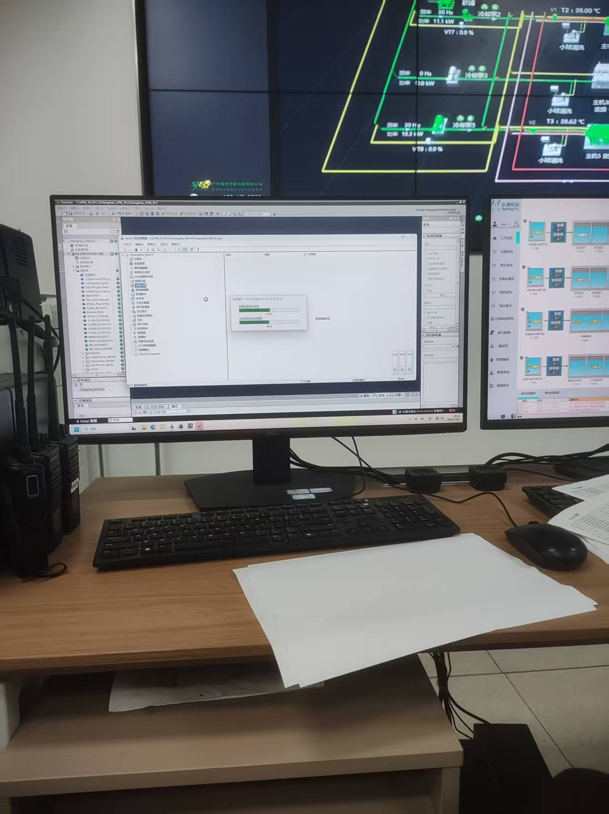

PLC 编程
西门子 S7-1200 / S7-1500 / S7-200 SMART，TIA Portal、STEP 7。SCL / LAD / FBD 三套写法，顺控状态机、联锁保护、报警分级。
WATER TREATMENT · ELECTRICAL AUTOMATION
水处理自控工程师 / Automation Engineer
专长于
从电气原理图到 PLC 逻辑，再到现场一次开车成功。多年水处理电气自控经验， 熟悉多介质过滤、超滤、反渗透、EDI、加药与 CIP 全流程控制。
数据为示例，可在 index.html 中替换为真实数字
ABOUT / 关于我

FIELD / COMMISSIONING我做水处理电气自控 —— 从方案选型、电气原理图、控制柜，到 PLC 程序、上位机画面， 再到现场调试和开车交付，一条线走完。
习惯先把工艺吃透再动笔：每一步在等什么条件、设备到不到位、出步时哪些量要清零。 顺控用状态机写，报警能溯源，别人接手也看得懂。阀只用单点命令（1 开 0 关）， 泵的启动条件一定包含阀门开到位反馈 —— 先阀后泵，不憋压、不空转。
学历：国家开放大学 · 电气工程及其自动化。 书是补的，现场是一点点攒的 —— 两样都得有。
SKILLS / 核心能力
西门子 S7-1200 / S7-1500 / S7-200 SMART，TIA Portal、STEP 7。SCL / LAD / FBD 三套写法，顺控状态机、联锁保护、报警分级。
WinCC、触摸屏组态、组态王 / 力控。工艺画面、趋势曲线、班次报表、报警记录与推送，让操作工一眼看懂现在在做什么。
PROFINET / PROFIBUS / Modbus RTU·TCP / OPC UA。pH、ORP、电导率、浊度、余氯、流量、液位、压力变送器，变频器与气动阀控制。
多介质过滤、活性炭、超滤 UF、反渗透 RO、EDI、软化、CIP 清洗、加药消毒、中水回用。EPLAN / CAD 原理图、控制柜与变频柜。
PROJECTS / 项目案例
S7-1500 + WinCC 全套控制。RO 主机顺控、低压冲洗、化学清洗、高低温与高低压保护联锁。
难点启停冲击大，膜前膜后压差波动容易伤膜壳与密封。
解法分段升压 + 慢开进水阀 + 延时判稳，异常立即停机并保持冲洗。
时间与压差双触发，气水联合反洗，正洗合格后自动回到制水状态。
难点反洗强度过大冲跑滤料，换排放口时憋压。
解法先开阀再启泵、新口到位才关旧口，气洗与水洗分时门控。
UF 制水、反洗、加强反洗与 CIP 全流程状态机，清洗浓度、温度、循环时间全程可追溯。
难点清洗液浓度靠人工配，温度与 pH 不受控会伤膜。
解法计量泵按液位折算加药量，温度 / pH 超限直接暂停并报警。
余氯、pH、电导率在线仪表组网，闭环调节加药泵频率，超限双级报警。
难点水质波动大，定量加药容易过量或不足。
解法PID 跟随 + 上下限死区，断药、断水、仪表故障分别报警。
4G 网关采集现场数据上云，手机端看运行状态、接收分级报警，减少夜间巡检。
难点现场无人值守，断网后数据容易丢。
解法本地缓存补传 + 心跳判离线，报警按等级分人推送。
软化再生顺控、EDI 产水电阻率联锁，不合格水自动回流，达标才进纯水箱。
难点再生与供水抢时间，水质波动时容易污染后段。
解法再生期间切备用路，电阻率低于设定值自动三通回流。
以上为行业通用写法的示例案例，替换成你的真实项目会更有分量。
EXPERIENCE / 经历
从控制柜接线、原理图绘制、现场配管配线做起，把图纸和实物对上号。
独立负责中小型水站 PLC 编程与调试，开始用状态机写反洗、再生、加药顺控。
大型 UF / RO 系统顺控架构与现场开车，负责程序标准化与年轻同事带教。
技术改造、远程监控与程序库沉淀，把每个项目的坑写成下一次的检查项。
本科。工作之余把电气理论系统补了一遍，反过来理解了现场那些"经验值"的来处。
CONTACT / 联系
自控方案 · 编程调试 · 技术改造 · 远程排障。说清工艺和现场情况，我给你能落地的做法。
以上为占位信息，替换后再上线。